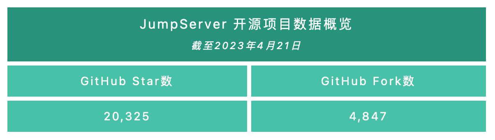
2023年4月24日，JumpServer开源堡垒机正式发布v3.2.0版本。在这一版本中，会话分享支持指定读写权限，让会话分享更加安全可靠。账号收集支持自动同步功能，并支持通过账号模版功能批量添加资产账号，同时账号切换功能新增支持网络设备类型，例如华为、思科、H3C交换机等。Kubernetes资产管理方面，支持通过网域网关进行连接。JumpServer还支持通过创建自定义协议的方式来连接远程应用，以达到更灵活连接资产的目的。另外，在这一版本中，JumpServer恢复了V2版本中的配置推送参数功能，包括Sudo权限、Shell类型和Windows用户组等参数。
X-Pack增强包方面，这一版本的JumpServer强化了部分自动化功能，用户可以使用WinRM协议对Windows平台进行自动化操作。账号改密功能支持对特权用户进行改密，并支持自定义一些自动化任务，比如支持通过自定义改密命令操作对网络设备进行改密。
新增功能
1. 会话分享支持对读写权限的控制
在JumpServer v3.2.0版本中，我们对会话分享功能的权限进行了细粒度的调整。在此版本之前，共享的会话是默认包含读写权限的，而在这一版本中，会话分享者可以按需设置共享会话的权限，并且可以将用户踢出本次会话，提高会话共享的安全性。
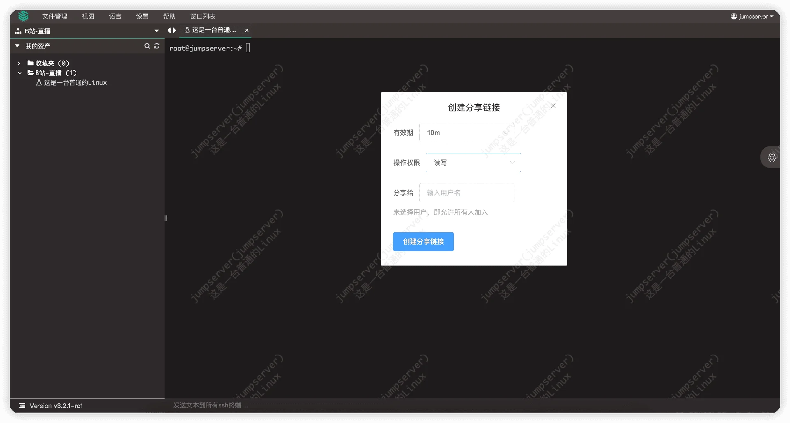
▲ 图1 会话分享支持对读写权限的控制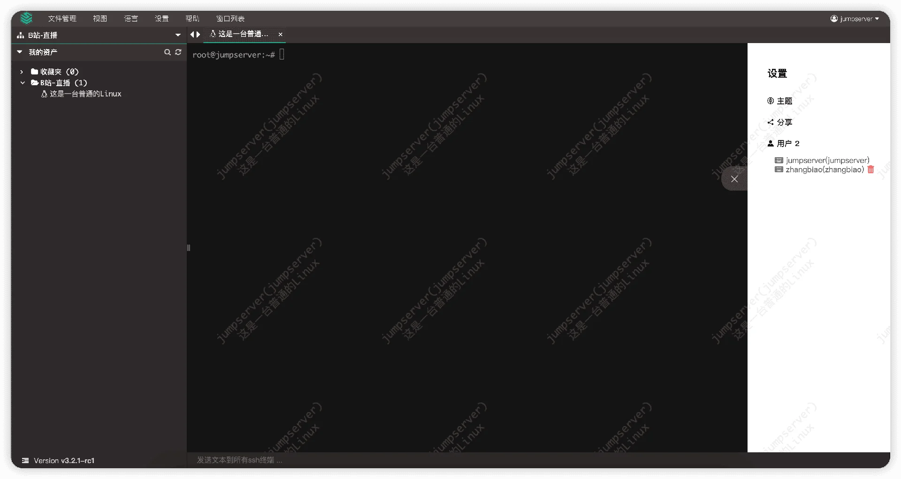
▲ 图2 会话分享者可以踢出加入共享会话的用户2. 支持使用账号模版批量添加资产账号
在JumpServer v3.2.0版本中，用户在“账号列表”页面中添加账号时，可以使用“账号模板”功能批量添加资产账号。
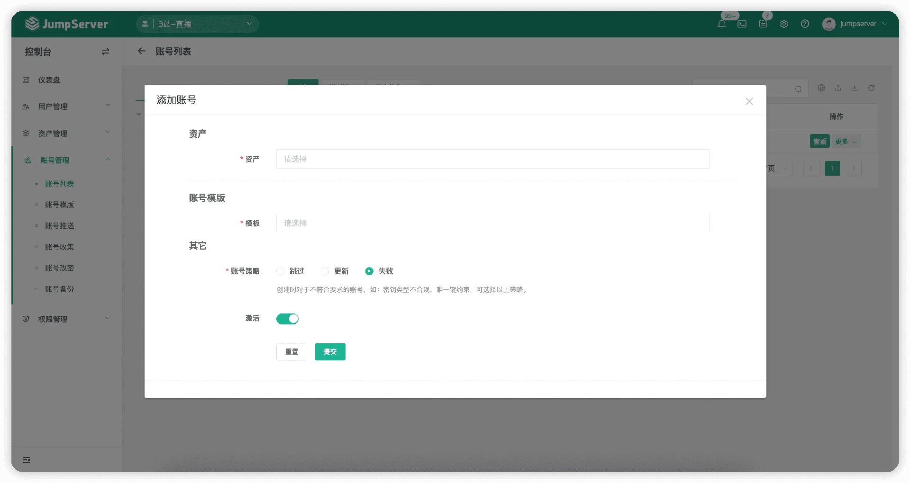
▲ 图3 支持使用账号模版批量添加资产账号3. Kubernetes资产支持通过网域网关进行连接
在JumpServer v3.2.0版本中，连接Kubernetes资产支持使用网域网关进行连接，在创建/更新资产时，选择“云平台”选项，并在“网域”选项中进行选择即可。
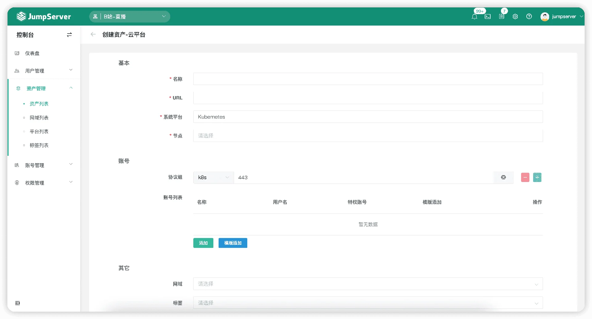
▲ 图4 Kubernetes资产支持通过网域网关进行连接4. 账号收集支持自动同步功能
在JumpServer v3.2.0版本中，在“账号收集”→“创建任务”中，如果开启“同步到资产”选项，那么收集到的资产用户会自动同步到对应的资产账号下。
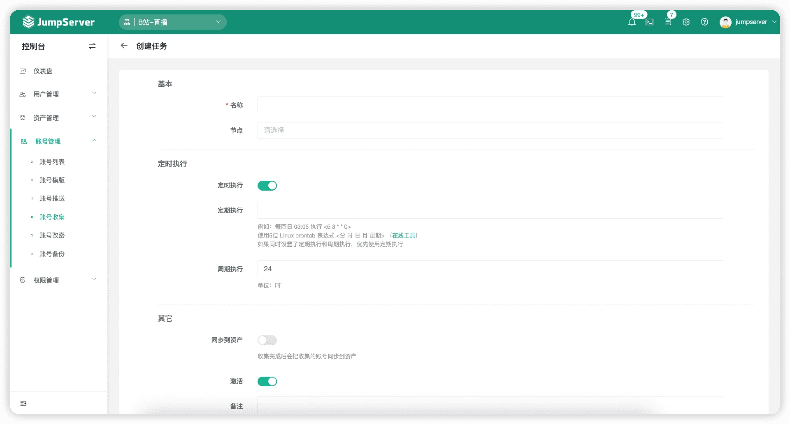
▲ 图5 账号收集支持自动同步功能5. 账号推送支持配置推送参数，包括Sudo权限、 Shell类型和Windows用户组等参数
在JumpServer v3.2.0版本中，账号推送功能新增“推送参数”选项，支持配置推送参数，例如Posix账号推送支持配置Sudo、Shell和用户组，Windows账号推送支持配置用户组等。
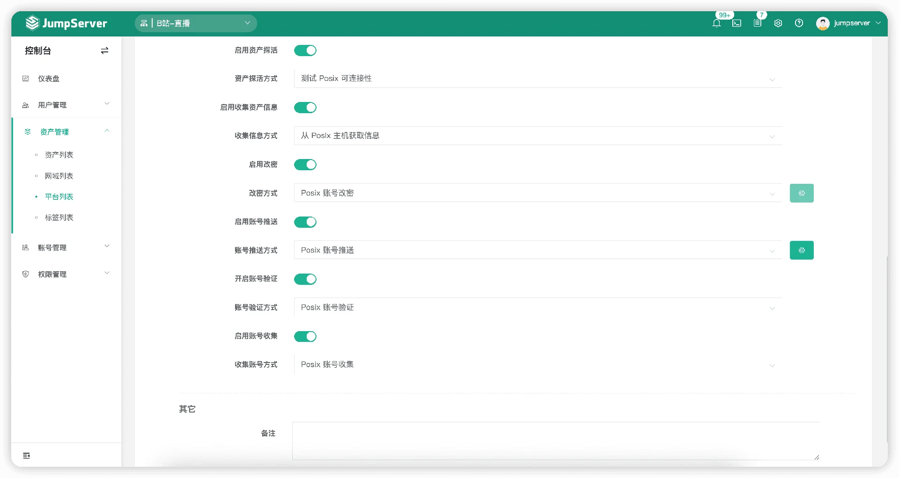
▲ 图6 在“平台列表”页面，可更改自动化“Posix账号推送”的推送参数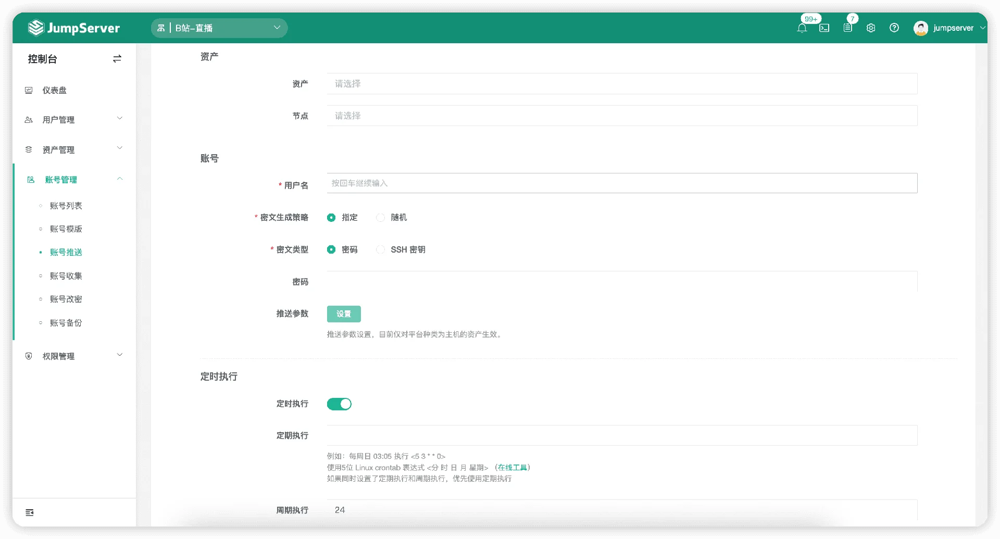
▲ 图7 在“账号推送”页面，可配置账号推送参数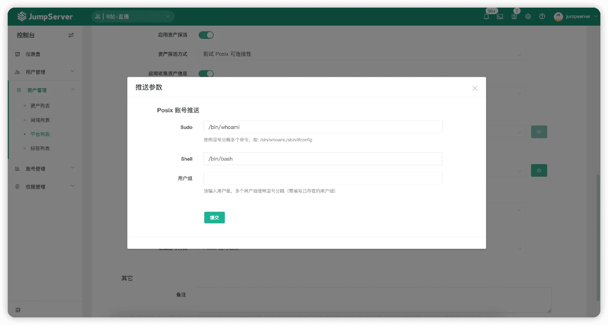
▲ 图8 平台自动化配置支持配置推送参数（以Posix平台为例）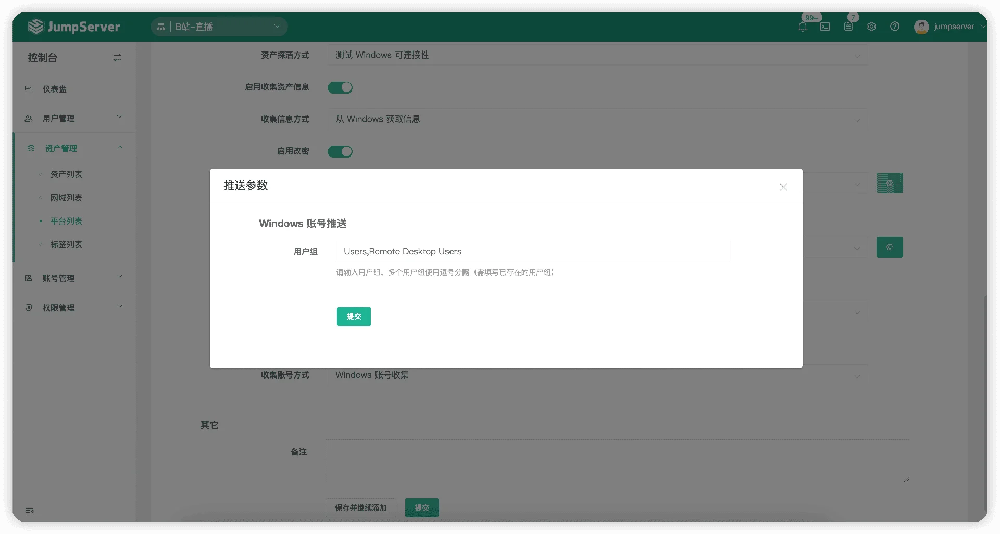
▲ 图9 平台自动化配置支持配置推送参数（以Windows平台为例）6. 账号切换功能支持网络设备，包括华为、思科、H3C交换机等
在JumpServer v3.2.0版本中，新增网络设备的“账号切换”功能，支持的网络设备包括华为、思科、H3C交换机等，目前支持的切换方式包括enable、super 15和super level 15。
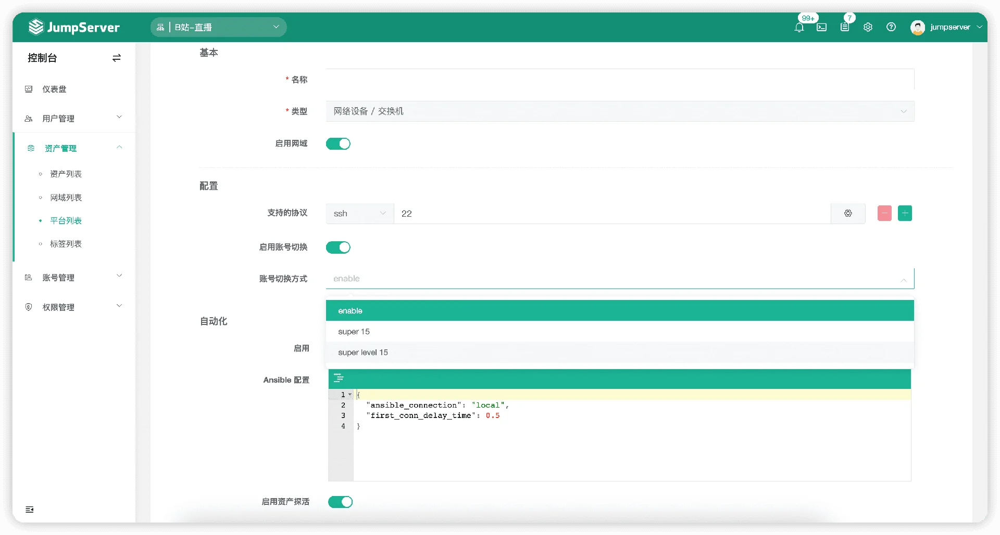
▲ 图10 账号切换功能支持网络设备7. 支持使用自定义远程应用来连接自定义平台类型的资产（高阶用法）
在JumpServer v3.2.0版本中，我们支持在“远程应用”模块中添加自定义平台及相关参数规则，并在“远程应用”模块的同级目录下建立platform.yml。
当导入该自定义的远程应用后，管理员可在“资产列表”界面创建与该自定义平台相关联的资产，运用好此功能，将会让远程应用功能更加灵活、更加强大。
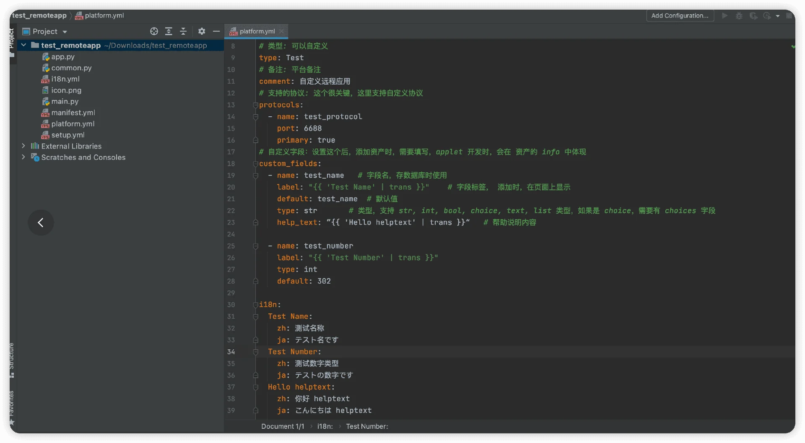
▲ 图11 支持使用自定义远程应用来连接自定义平台类型的资产（高阶用法）：platform.yml规则详解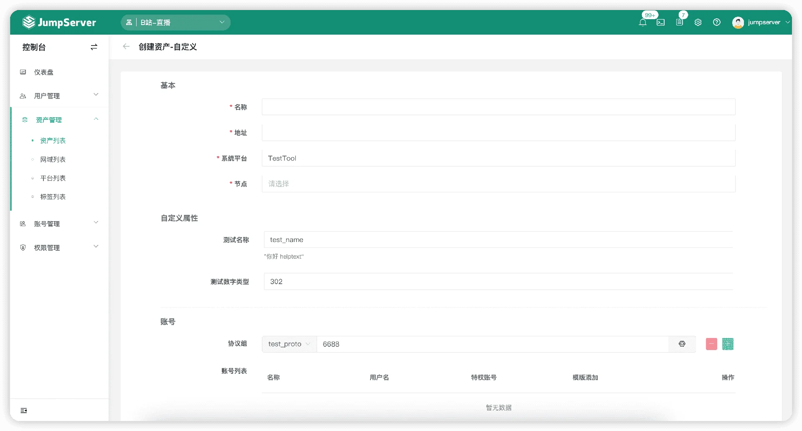
▲ 图12 支持使用自定义远程应用来连接自定义平台类型的资产（高阶用法）：创建自定义平台资产8. 账号改密功能支持对特权用户进行改密（X-Pack增强包内）
在JumpServer v3.2.0版本中，支持对特权用户进行改密，和V2的参数保持一致。由于修改特权用户的密码为高风险操作，所以需要在JumpServer的配置文件“config.txt”中添加参数“CHANGE_AUTH_PLAN_SECURE_MODE_ENABLED”为“false”，并重启之后才会生效。
9. Windows资产支持通过WinRM协议执行自动化操作（X-Pack增强包内）
在JumpServer v3.2.0版本中，WinRM协议将以Windows资产中的一个协议身份出现。当管理员为某个Windows资产添加了WinRM协议后，后续执行Windows的自动化操作都会通过WinRM协议来执行。
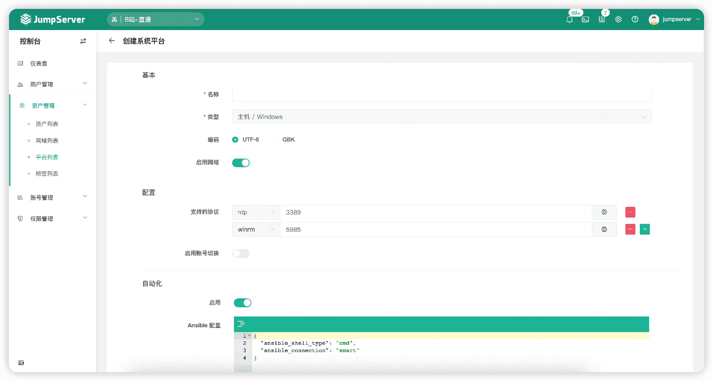
▲ 图13 Windows资产支持通过WinRM协议执行自动化操作10. 资产平台支持自定义一些自动化任务，例如资产探活、账号验证及账号改密等（ X-Pack增强包内）
在JumpServer v3.2.0版本中，非系统内置的“主机”和“网络设备”类型平台新增通过SSH方式的资产探活（Ping by SSH）、账号验证（SSH账号验证）及账号改密（SSH账号改密）功能。
其中，自动化任务“SSH账号改密”支持管理员自行配置改密命令，当资产执行账号改密任务的时候，自动化任务会将管理员配置的命令依次执行。
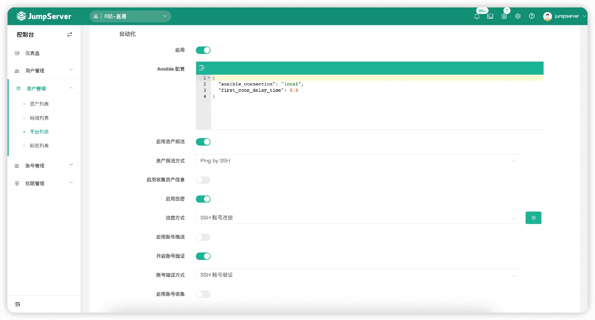
▲ 图14 资产平台支持自定义一些自动化任务，例如资产探活、账号验证及账号改密等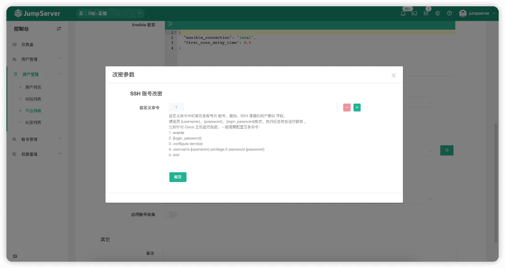
▲ 图15 通过SSH方式进行账号改密功能优化
■ 导入资产时，节点字段处支持填写节点的完整路径；
■ 支持用户手机号进行区号选择；
■ 用户个人信息设置中的“文件加密密码”页面会显示是否已设置；
■ 账号列表支持单独或批量清除账号密文信息；
■ 远程应用可以使用PowerShell命令行进行部署；
■ 当连接的资产为网关时，采用直连策略；
■ 优化资产、资产平台http协议页面显示为“http(s)”；
■ “命令过滤”详情页显示更多信息（例如动作、优先级、是否激活等）；
■ 作业中心执行历史显示作业名称；
■ 创建资产时，账号列表显示模版添加信息；
■ 创建/更新资产后，默认按照更新时间进行排序；
■ Luna页面“用户授权”树鼠标悬停时，显示资产的备注信息（请勿将敏感信息放到资产备注中）；
■ 在Luna页面连接资产并使用新窗口打开时（资产树中右键点击“资产”选项），实现窗口在当前页面弹出的效果；
■ 优化资源列表批量操作下拉菜单的样式；
■ 通过DBeaver连接数据库时，不再有“检查更新，驱动下载”等提示信息；
■ 优化作业中心命令字段最大长度为8192字节；
■ 优化支持旧版本的SSH服务端认证。
Bug修复
■ 修复账号克隆时出现报错的问题；
■ 修复执行批量命令时出现报错的问题；
■ 修复导出账号历史记录的一些翻译问题；
■ 修复自定义Linux平台时，无法复用连接的问题；
■ 修复通过OAuth2认证获取用户个人信息失败的问题；
■ 修复资产平台关闭“SFTP”选项后，Luna页面仍显示Web SFTP连接方式的问题；
■ 修复日志记录到Syslog日志系统时的中文编码问题；
■ 修复普通用户申请工单时，指定账号提示没有权限的问题；
■ 修复Luna页面中用户授权树默认展开所有节点的问题，以及授权数的搜索问题（同步加载方式）；
■ 修复通过LDAP方式导入用户时指定其他组织，还会导入到Default组织的问题；
■ 修复用户首次登录选择强制启用MFA失败的问题；
■ 修复资产与云同步导入LAN局域网账号时，保存资产平台失败的问题；
■ 修复用户在资产树连续创建节点后又连续修改节点名称，只有最后一个节点名称能够修改成功的问题；
■ 修复V2版本升级到v3.0版本时，系统用户用户名不存在或可能失败的问题；
■ 修复Magnus组件连接Oracle数据库12c+版本时认证失败的问题（X-Pack增强包内）；
■ 修复Magnus组件对超长SQL无法解析的问题（X-Pack增强包内）；
■ 修复Magnus组件对某些Oracle数据库获取用户名失败的问题（X-Pack增强包内）；
■ 修复Magnus组件连接Redis数据库时用户名认证失败的问题（X-Pack增强包内）。